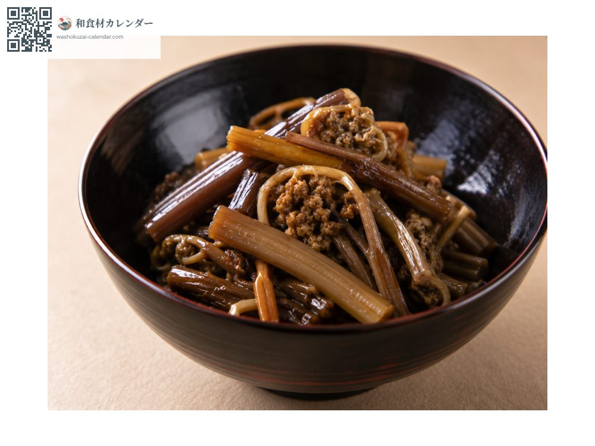
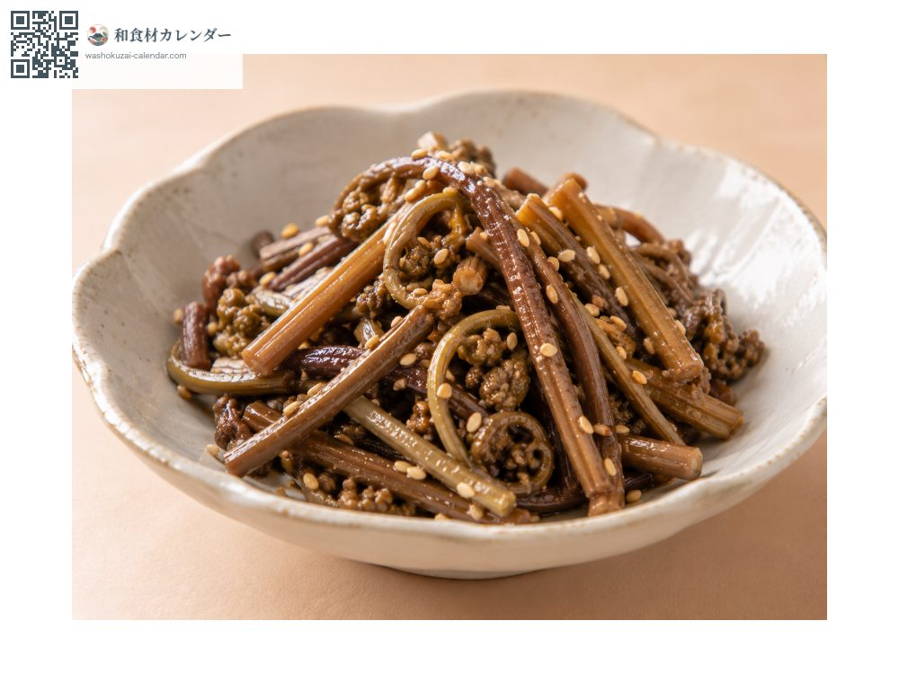
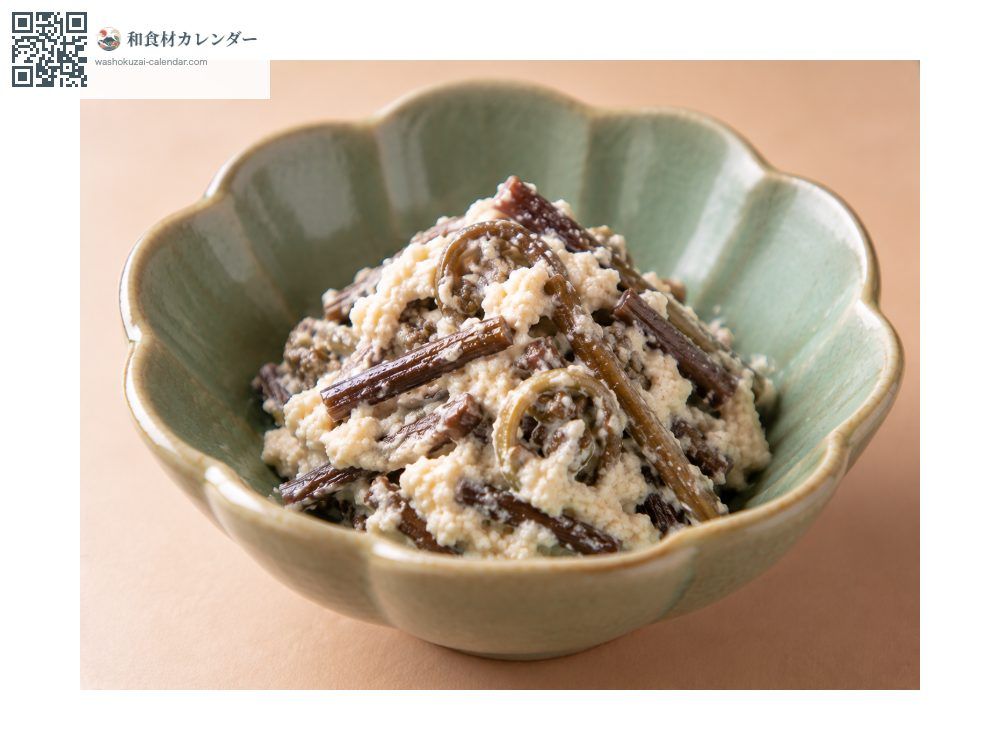
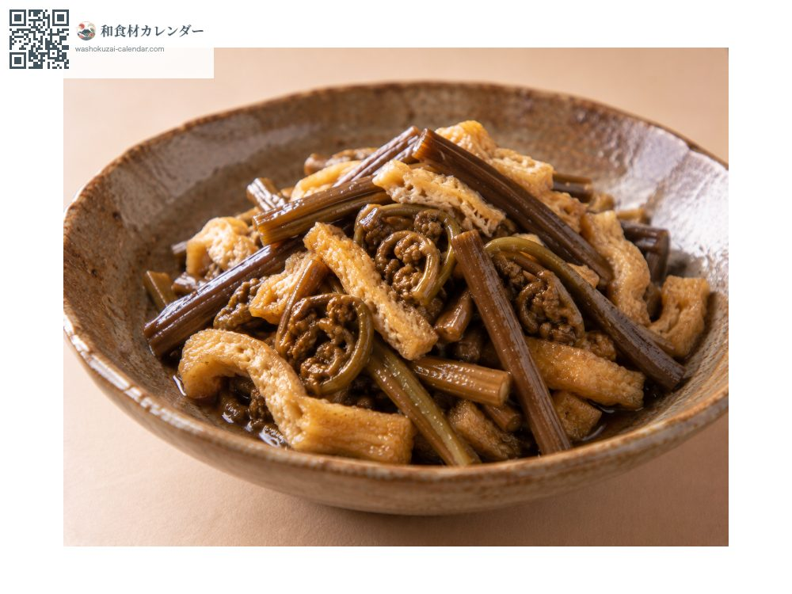

野菜
ゼンマイ
ぜんまい
別名・別表記薇、干しゼンマイ、zenmai
旬は4月・5月

旬の時期
1月
2月
3月
4月
5月
6月
7月
8月
9月
10月
11月
12月
旬出回り
調理法

煮物
出汁と醤油で含め煮にする。

ナムル
ごま油と塩で和える。干したものを戻して使う。

白和え
豆腐で和える。

炒め煮
油揚げと一緒に炒め煮にする。
選び方
綿毛に覆われ、茎が太くしっかりしたもの。先が巻いているもの。
保存方法
生はアク抜きしてから冷蔵。干したものは常温で長期保存できる。
主な産地
豆知識
生のままでは食べられず、重曹などでアク抜きが必要。乾燥させた「干しゼンマイ」は保存がきき、戻して煮物やナムルに使う。ワラビより茎が太く、綿毛をかぶっているのが見分け方。